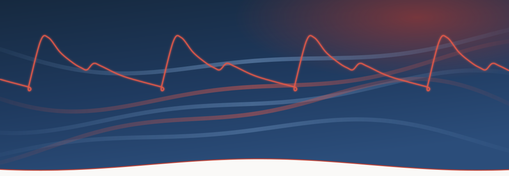

Choose your level
Novice
A systematic bedside approach to shock.
Start here →Informed Learner
The physiology behind the bedside.
Full buildExpert
Mastery, edge cases, the literature.
Full build
Hemodynamics, brought to life. A modular, case-based approach to the patient in shock.